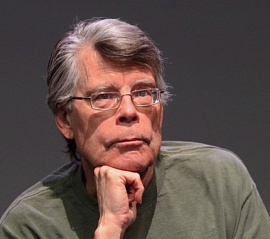
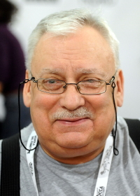

Автори

- Стівен Кінг
- Стівен Кінг — один з найпопулярніших американських письменників сучасності, родом з Портленда, штат Мен. Пише у таких жанрах, як: жахи, містика, фантастика, фентезі, драма. За свої літературні роботи отримав прізвисько — «Король жахів».
Народився майбутній письменник 21 вересня 1947 року. Батько пішов з сім’ї, коли Стівену було 2 роки й мати була змушена працювати на декількох роботах, щоб прогодувати Стівена і його старшого брата.
У одному зі своїх інтерв'ю Кінг згадував: «Я з дитинства відчував, що життя несправедливе. Мати виховувала мене одна, батько покинув нас, і їй довелося багато і важко працювати. Ми були бідними, жили від зарплати до зарплати та нічого не знали про суспільство рівних можливостей та інші нісенітниці, але вона ніколи не скаржилася, але я не був ні глухим, ні сліпим. Дещо від цього відчуття несправедливості ще залишилося в мені й відбивається сьогодні в моїх книгах».
У дитинстві Кінг багато хворів і часто пропускав школу і проводив цей час з книгами та коміксами. Перше своє оповідання Кінг написав у віці семи років, а коли показав його мамі, та похвалила його і сказала, щоб він продовжував писати й Стівен продовжив писати й продовжує до сьогодні.
Згодом Кінг вступає до Університету штату Мен, де знайомиться зі своєю майбутньою дружиною Табітою. У 1971 році вони одружуються і Кінг влаштовується працювати викладачем в Університет Мену. Цього ж року Табіта у сміттєвому кошику знаходить недописаний рукопис «Керрі» і змусила чоловіка його дописати, згодом саме цей роман і приніс автору першу славу і такі важливі гонорари, адже окрім роботи викладачем у ночі Кінг працював, ще у пральні.
Після «Керрі» Кінг пише ще ряд успішних романів, які й приносять йому світову славу і визнання. За його книгами було зняти більш як 50 фільмів та серіалів.
Сьогодні Кінг живе й працює у своєму рідному містечку.
- Лі Бардуго
- Ім’я американської письменниці Лі Бардуґо вже стало синонімом сучасного фентезі та романів. Майбутня письменниця народилася 6 квітня 1975 року в Єрусалимі, Ізраїль, а провела своє дитинство в Лос-Анджелесі, США. Бардуґо здобула ступінь з англійської мови в Єльському університеті, та перш ніж стати відомою письменницею встигла попрацювати копірайтером, створюючи трейлери до фільмів, журналісткою та навіть візажистом.
Як зазначає сама письменниця, після особистої драми вона зрозуміла, що не може залишатися на тому ж місці, і поставила собі за мету написати книгу до свого 35-го дня народження.
Книги Лі Бардуґо входять до численних списків бестселерів, зокрема «New York Times» та отримують престижні нагороди від світових книжкових премій.
Дебютна книга авторки «Тінь та кістка», якою розпочинається трилогія «Гриша» була видана у травні 2012 року в одному зі старіших світових видавництв «Macmillan Publishers».
За рік було видано продовження цієї фентезійної історії, роман «Облога та штурм».
Третя книга з серії, роман «Руїна та відновлення» побачив світ у 2014 році, а вже у 2019 році компанія «Netflix» анонсувала зйомки серіалу за мотивами першої книги цієї трилогії.
Український читач отримав можливість поринути у всесвіт трилогії завдяки видавництву «Клуб Сімейного Дозвілля».
У 2015 році вийшла друком наступна книга «Шістка воронів» яка відкрила нову однойменну дилогію, а у 2016 році було видано її продовження - «Королівство шахраїв», обидві книги розповідають історію про відчайдушну команду грабіжників з міста Каттердаму.
У 2019 році авторка публікує нову книгу «Король шрамів», яка започаткувала нову серію, а за два роки по тому, у 2021 році буде видано її продовження - «Правило вовків».
У тому ж 2019 році свого читача побачила книга «Дев’ятий дім», яка стала першою книгою серії «Алекс Стерн», а у січні 2023 авторка видала продовження історії, книгу «Hell Bent».

- Анджей Сапковський
- Анджей Сапковський - польський письменник-фантаст і публіцист, автор популярної фентезі-саги «Відьмак», яка принесла йому найбільшу популярність. У 1986 році автор написав свою першу фентезійну повість «Відьмак», в якій створив свого головного героя - відьмака Геральта з Рівії, майстра меча і чарівних знаків, який за гроші вбиває монстрів і різноманітних міфічних створінь у своєму фантастичному світі. Він в міру загадковий, володіє неабиякими здібностями, його принципи прямі і гострі, як лезо меча. Чим не ідеальний фентезійний герой?
В результаті, череда новел переросла в однойменну назву вигаданого циклу, де центральним героєм є Геральт. У 1990 році вийшла друга книга письменника - «Останнє бажання». У 1992 році Сапковський видав нову книгу про відьмака - «Меч Призначення». У 1994 році почав п'ятитомну сагу про Відьмака та Відьмачку, яка принесла йому світове визнання. Пригоди Відьмака також були видані у вигляді коміксів, а за мотивами книг Анджея Сапковського створено кілька серіалів і комп'ютерних ігор. Крім цього, Сапковський є автором безлічі невеликих оповідань.Серед заслуг автора також маса критичних статей про фентезі для справжніх шанувальників творчості автора.
Книги Анджея Сапковського використовують мало не всі можливі фентезійні стереотипи (меч і магія, бажання і призначення, дракони і ельфи), але в результаті вийшли зовсім нетипові та самобутні історії.В циклі романів Анджей Сапковський майстерно жонглює різними казками, міфами і легендами, показуючи їх в абсолютно новому ракурсі.